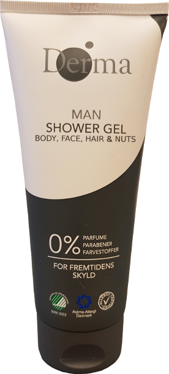
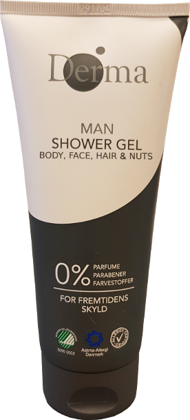

Derma Showergel
Derma Shower gel for men er lavet til manden på farten der har sine nosser kær. Med Derma Shower gel for men, har du muligheden for ikke blot at vaske kroppen, ansigtet og håret, men også de kæreste ædelsten med et produkt der er lavet med 0% parfume, 0% parabener og 0% farvestoffer!
Mange mænd bruger Shower Gels som ikke er tilegnet mænd eller ordentlig beskytter ens klunker. #DermaNutCare er i forbindelse med produktet Derma Shower Gel for men, som er en Shower Gel som ikke blot beskytter dine klunker, men helbreder dem. Derma Shower Gel for men er med 0% parfume, parabener og farvestoffer som gør den 100% sikker for brugeren. Derma Shower Gel for men er også certificeret til at være venlig mod Allergi, Astma og miljøet. Hjælp os med at sprede opmærksomhed på problemet ved at dele til vores #hashtag #DermaNutCare til alle dem du kan.